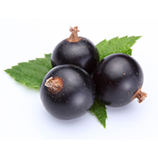

Peach

Note: base
Family: fruity
Type: accord
Origin: —
Ingredient Notes
Peach is a versatile ingredient in perfumery. This is a recreation of peach made from a blend of aromachemicals. Peach is very powerful, a small amount can add a sweet, creamy touch. Soft, fuzzy, sensual peach. No wonder perfumers love it: peach almost gives the same velvety texture to a fragrance that you get from stroking the ripe fruit itself.
Prominent In
Coco (Chanel), Dolce Vita (Dior), J’Adore (Dior), Mitsouko (Guerlain), le Mimosa (Goutal Paris), Feminite du Bois (Serge Lutens)
Blends Well With
Vanilla, Tuberose, Jasmine, Patchouli, Oakmoss
-21-
Cassis

Note: top
Family: fruity
Type: accord
Origin: —
Ingredient Notes
This is a powerful blackcurrant reconstruction that lacks the characteristic "cat urine" facet of natural blackcurrant. Cassis famously pairs beautifully with rose, but it also blends well with the other ingredients noted above. is usually a liqueur made from blackcurrant berries. So, Cassis expect something fruity and syrupy.
Prominent In
Eau de Charlotte (Annick Goutal), Chamade (Guerlain), Wild Fig & Cassis (Jo Malone), Black Orchid (Tom Ford), First (Van Cleef & Arpels)
Blends Well With
Jasmine, Violet, Musk, Benzoin, Citrus
-22-